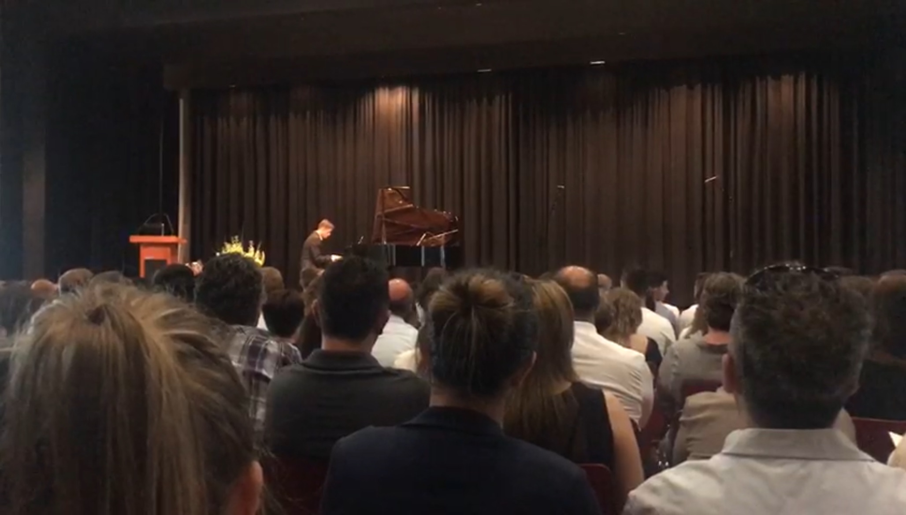

Musician

My passion for music began in second grade when I started attending a Montessori school. The school was small, but it had a very passionate piano teacher. Almost every student was learning to play the piano, which motivated me to start as well. During this time, my teacher introduced me to the boogie-woogie and the art of improvisation. Playing the piano became a great way to energize my mind and rejuvenate my spirit. Music is incredibly beautiful. It drives creativity and boosts my mood like nothing else. One of my proudest moments was performing a piece by Rachmaninoff at my high school graduation ceremony. My love for music has since expanded to include playing the guitar and ukulele, as well as singing. I find immense joy in making music, whether alone or with others. What I love most about music is its power to unite people from all backgrounds. It's a universal language that brings us together in a way like nothing else. The joy and energy music brings to my life are unparalleled, and sharing that with others makes it even more special.